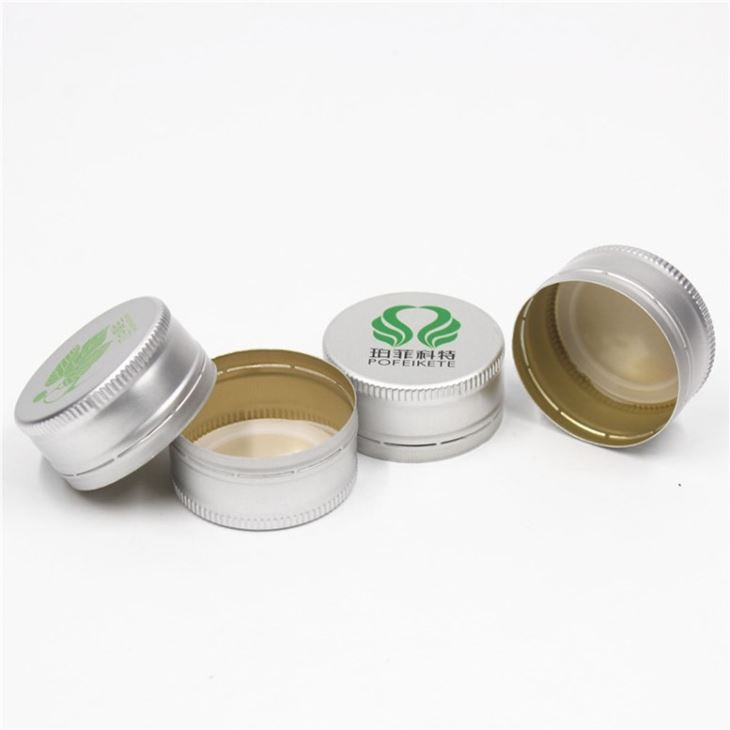
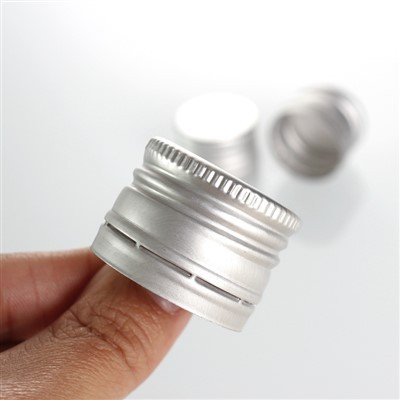
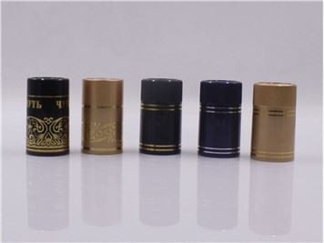
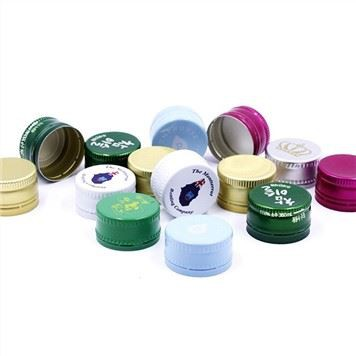
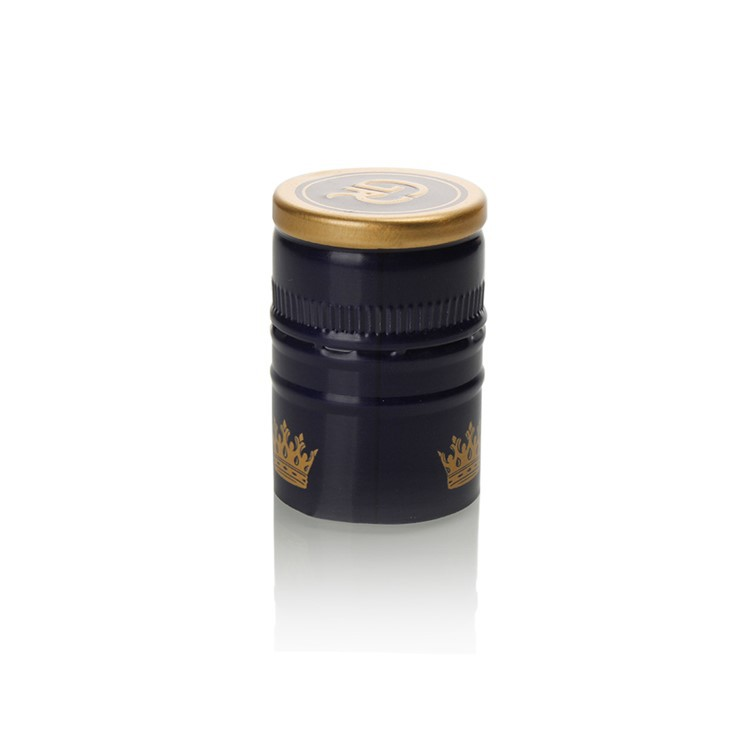

Jan 22, 2026
Do spirits bottle caps have a specific orientation?
As a supplier of spirits bottle caps, I've often been asked an interesting question: Do spirits bottle caps have a speci
read more

Jan 22, 2026
How do wine bottle screw caps compare to synthetic corks?
Wine lovers and producers have long debated the best way to seal a wine bottle. For years, natural cork was the go - to
read more

Jan 22, 2026
Are there wine bottle cap covers for biodynamic wines?
Are there wine bottle cap covers for biodynamic wines?
In the world of wine, biodynamic wines have emerged as a unique a
read more

Jan 21, 2026
What is the market share of wine aluminium caps?
The wine industry has witnessed significant transformations over the years, not only in terms of production and consumpt
read more
-
27
Oct Can aluminium caps be used for mustard packaging?Hey there! As an aluminium caps supplier, I often get asked all sorts of questions about the applications of our products. One question that's been po
Can aluminium caps be used for mustard packaging?Hey there! As an aluminium caps supplier, I often get asked all sorts of questions about the applications of our products. One question that's been po -
27
Oct
How do you identify the brand from a soda bottle cap?Hey there! I'm a supplier of soda bottle caps, and I've been in this business for quite a while. One question I often get asked is, "How do you i -
24
Oct What materials are wine bottle screw caps made of?Wine bottle screw caps, once a rarity in the world of fine wines, have become increasingly popular over the past few decades. As a leading supplier of
What materials are wine bottle screw caps made of?Wine bottle screw caps, once a rarity in the world of fine wines, have become increasingly popular over the past few decades. As a leading supplier of -
24
Oct How does the mycelium of Wine Cap mushrooms spread?As a supplier of Wine Cap mushrooms, I've witnessed firsthand the fascinating process of how their mycelium spreads. Wine Cap mushrooms, also known as
How does the mycelium of Wine Cap mushrooms spread?As a supplier of Wine Cap mushrooms, I've witnessed firsthand the fascinating process of how their mycelium spreads. Wine Cap mushrooms, also known as -
24
Oct Do twist top caps have a smooth surface?Hey there! As a supplier of Twist Top Caps, I often get asked if these caps have a smooth surface. Well, let's dive right into this topic and find out
Do twist top caps have a smooth surface?Hey there! As a supplier of Twist Top Caps, I often get asked if these caps have a smooth surface. Well, let's dive right into this topic and find out -
23
Oct
How do you clean glass bottle caps?Hey there! As a supplier of glass bottle caps, I often get asked about how to clean these little guys properly. It might seem like a no - brainer, but -
23
Oct How are soda bottle caps attached to the bottle?As a leading supplier of soda bottle caps, I've witnessed firsthand the fascinating process of how these essential components are attached to bottles.
How are soda bottle caps attached to the bottle?As a leading supplier of soda bottle caps, I've witnessed firsthand the fascinating process of how these essential components are attached to bottles. -
23
Oct
What are the alternative materials for plastic caps?In the contemporary packaging industry, plastic caps are ubiquitous, firmly holding their ground as a staple for sealing various containers. As a seas -
22
Oct
How to improve the quality of wine aluminium caps?In the dynamic world of wine production, every detail matters, and the wine aluminium cap is no exception. As a dedicated supplier of wine aluminium c -
22
Oct Can wine foil caps be used for wine festivals?Hey there, wine enthusiasts and festival organizers! I'm a supplier of Wine Foil Caps, and I've been getting a lot of questions lately about whether w
Can wine foil caps be used for wine festivals?Hey there, wine enthusiasts and festival organizers! I'm a supplier of Wine Foil Caps, and I've been getting a lot of questions lately about whether w -
22
Oct How do you remove the liner from a soda bottle cap?Removing the liner from a soda bottle cap may seem like a trivial task, but it's a process that requires a certain level of understanding and precisio
How do you remove the liner from a soda bottle cap?Removing the liner from a soda bottle cap may seem like a trivial task, but it's a process that requires a certain level of understanding and precisio -
21
Oct
Can I use spirits bottle caps in a door decoration?Hey there! As a supplier of spirits bottle caps, I've been getting a bunch of interesting questions lately. One that really stood out is, "Can I
Send Inquiry